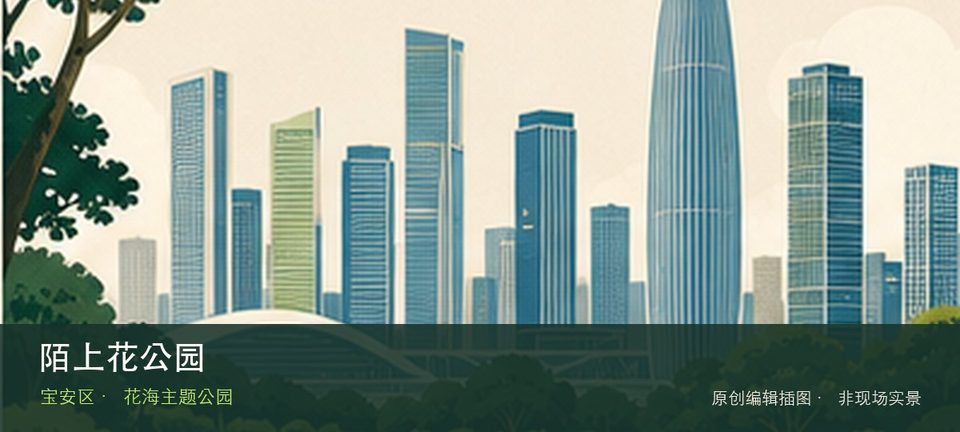

适合谁
适合亲子和自然教育，但体验高度依赖孩子体力、活动日与设施开放情况。

SHENZHEN GUIDE · 158
石岩街道石岩湖郊野公园环线 · 花海主题公园
陌上花公园位于石岩街道石岩湖郊野公园环线，3.45万平方米主题花海以爱心花圃、时雨亭和拈花观景台构成石岩湖环线上的季节节点。先辨认爱心形主题花海，再观察时雨亭与拈花观景台，两者共同说明这里为何不能被同类地点的泛化标签替代。带孩子到访时，可把爱心形主题花海与时雨亭与拈花观景台转化为两项能够完成的观察任务，不必追求看完所有设施。活动、花期和设备开放受日期影响，先确认预约、遮阴、饮水与返程条件。
WHY GO
适合亲子和自然教育，但体验高度依赖孩子体力、活动日与设施开放情况。
到达陌上花公园后先确认爱心形主题花海是否可进入，再将时雨亭与拈花观景台作为可取消的第二站；遇拥挤、暴晒或降雨就提前折返。
公交可查询陌上花公园站；也可从石岩湖郊野公园开放入口沿环线骑行或步行到达，不横穿非开放库区。
陌上花主题区旁设停车场；花期车位周转慢，满位后按现场引导改停外围正规停车场。
12月至次年2月常见油菜花，5—6月以马鞭草、格桑花为主；具体花况随养护和天气变化。
NEARBY IDEAS
 编辑配图·非现场实景
编辑配图·非现场实景
环石岩湖绿道位于石岩湖环湖开放区域，约30.8公里的长距离环湖绿道串联多个主题公园，透水慢行路面适合分段步行、慢跑或骑行。
 编辑配图·非现场实景
编辑配图·非现场实景
深圳（宝安）劳务工博物馆位于石岩上屋，依托旧工业建筑记录外来劳务工的生产、居住与城市贡献，是理解深圳制造业背后普通劳动者的重要场馆。
 编辑配图·非现场实景
编辑配图·非现场实景
大雁山森林公园位于玉塘街道长圳社区长圳新村长凤路365号，1.61平方公里的低开发森林公园以约5公里环山园路、登山步道、…